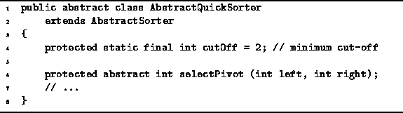

Data Structures and Algorithms
with Object-Oriented Design Patterns in Java
Data Structures and Algorithms
with Object-Oriented Design Patterns in Java
Program  introduces
the AbstractQuickSorter class.
The AbstractQuickSorter class extends the AbstractSorter class
defined in Program .
It declares the abstract method selectPivot
the implementation of which is provided by a derived class.
introduces
the AbstractQuickSorter class.
The AbstractQuickSorter class extends the AbstractSorter class
defined in Program .
It declares the abstract method selectPivot
the implementation of which is provided by a derived class.

Program: AbstractQuickSorter fields.
Program defines a sort method
of the AbstractQuickSorter class
that takes two integer arguments,
left and right,
which denote left and right ends, respectively,
of the section of the array to be sorted.
That is, this sort method sorts
.
Program: AbstractQuickSorter class recursive sort method.
As discussed above, the AbstractQuickSorter only sorts sequences whose length exceeds the cut-off value. Since the implementation shown only works correctly when the number of elements in the sequence to be sorted is three or more, the cut-off value of two is used (line 6).
The algorithm begins by calling the method selectPivot which chooses one of the elements to be the pivot (line 8). The implementation of selectPivot is discussed below. All that we require here is that the value p returned by selectPivot satisfies . Having selected an element to be the pivot, we hide the pivot by swapping it with the right-most element of the sequence (line 9). The pivot is hidden in order to get it out of the way of the next step.
The next step partitions the remaining elements into two sequences--one comprised of values less than or equal to the pivot, the other comprised of values greater than or equal to the pivot. The partitioning is done using two array indices, i and j. The first, i, starts at the left end and moves to the right; the second, j, starts at the right end and moves to the left.
The variable i is increased as long as array[i] is less than the pivot (line 15). Then the variable j is decreased as long as array[j] is greater than the pivot (line 16). When i and j meet, the partitioning is done (line 17). Otherwise, but . This situation is remedied by swapping array[i] and array[j] (line 18).
When the partitioning loop terminates, the pivot is still in array[right]; the value in array[i] is greater than or equal to the pivot; everything to the left is less than or equal to the pivot; and everything to the right is greater than or equal to the pivot. We can now put the pivot in its proper place by swapping it with array[i] (lines 20-21). This is called restoring the pivot. With the pivot in its final resting place, all we need to do is sort the subsequences on either side of the pivot (lines 22-25).
Program defines the no-arg sort method
of the AbstractQuickSorter class.
The no-arg sort acts as the front end
to the recursive sort given in Program .
It calls the recursive sort method
with left set to zero
and right set to n-1,
where n is the length of the array to be sorted.
Finally, it uses a StraightInsertionSorter
to finish sorting the list.
Program: AbstractQuickSorter class sort method.
 Copyright © 1998 by Bruno R. Preiss, P.Eng. All rights reserved.
Copyright © 1998 by Bruno R. Preiss, P.Eng. All rights reserved.